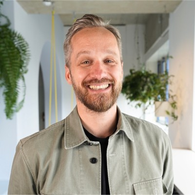
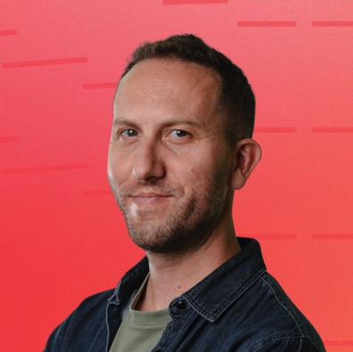
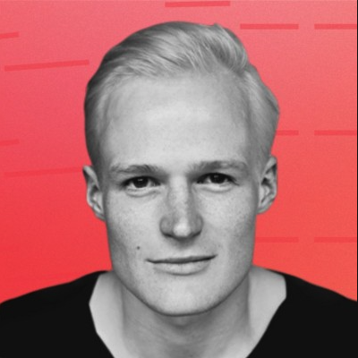
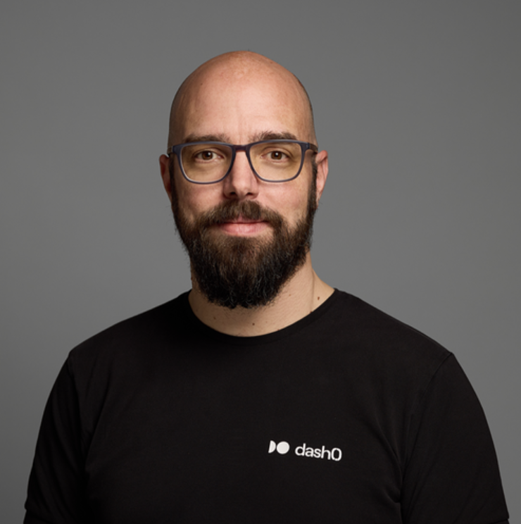

The next-generation observability platform — built by the team that sold Instana to IBM for $500M. Join us in defining the future of observability.




OpenTelemetry, PromQL, and Perses — natively supported from day one. No proprietary agents, no vendor lock-in. Your data belongs to you.
Specialized AI agents that don't just surface problems — they actively resolve them. Root-cause analysis, auto-dashboards, cost optimization.
Proprietary noise reduction pipeline. Spam filter → Ingest → Filter → Triage. Less noise = faster resolution = lower costs.
Pay by volume, regardless of data type. No hidden costs, no multi-year contracts, no surprise bills. You know exactly what you're paying.
| Dash0 | Datadog | Dynatrace | |
|---|---|---|---|
| OpenTelemetry | ✅ Native from day one | Partial — bolted on | Partial — bolted on |
| AI Approach | ✅ AI-native (Agent0) | AI layered on top | AI layered on top |
| Vendor Lock-in | ✅ None — open standards | High — proprietary agents | High — OneAgent |
| Pricing | ✅ Transparent, by volume | Per signal type, complex | Host-based, opaque |
| Time to Value | ✅ Minutes | Hours to days | Hours to days |
| Data Ownership | ✅ Full — OTLP format | Vendor-controlled | Vendor-controlled |
The open standard is being adopted at an accelerating rate. Engineering teams want portability and freedom. Dash0 is the only platform supporting OTel end-to-end.
Observability is evolving from passive dashboards to autonomous systems. Agent0 is the first platform built for this reality — detecting, diagnosing, and resolving in real-time.
Modern apps span Kubernetes, serverless, multi-cloud, and AI workloads. Legacy tools can't keep up. Dash0's unified platform covers the full spectrum.
Dash0 is hiring across all teams. Join us in defining the future of observability.
View Open Roles →